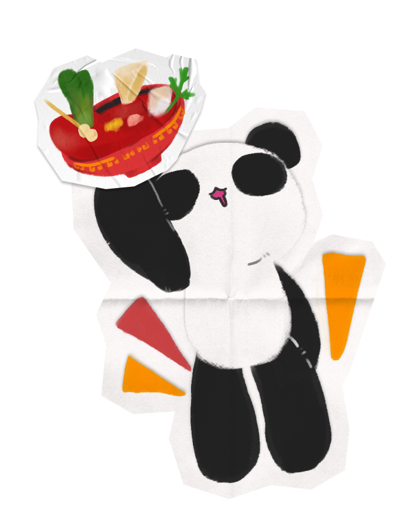
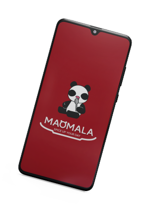

평소 좋아하는 음식과 관련된 가상 브랜드를 계획한 후,
‘마오마라’의 어플리케이션을
구상하고 디자인 하였습니다.
I made a virtual project wich is related to my favorite food
and designed “MAOMALA” application.
Personal Project
Project duration： 5 days
Tool：




![Two personas are shown here. The first persona is a 21 year old university student who enjoys exploring good restaurants and is foodie, valuing the benefits an app offers when using it. Since he goes out of his way to install a restaurant's own app he hopes for both more convenience and more benefits in return. He came across the restaurant's own app while looking into alternatives because delivery fees on major delivery apps felt too expensive. As a student every cost matters so he hopes the app's own benefits are generous. The second persona is a 34 year old office worker who takes a strong interest in cooking and social issues and considers ease of use the most important factor in an app. She wishes menus came with enough information to make choosing easier. Feeling uneasy about how major delivery apps charge business owners excessive fees she tends to order by phone or use restaurants' own apps instead. However she's had the experience of having to call and ask questions because some apps show photos too small to make out clearly.](img/maomala/Maomala_2.jpg)
![A menu map is shown. Launching the app leads to a splash screen followed by the sign up window and then the user registration window in order. The next level shows Points, Order History, Order, News and Brand Introduction. Entering the Points menu shows the points history window. Using the Order menu brings up a store selection window, and choosing a store leads to a menu selection window. Selecting the menu allows users to browse the mala tang, guo bao rou, mala xiang guo and beverage windows. Selecting the News menu leads to the service notice window where an events window can be checked, and selecting the Brand Introduction menu shows the brand introduction and franchise inquiry windows.](img/maomala/Maomala_3.jpg)
![Main Screen. Menus used less frequently were grouped separately into a tab menu. Notifications and the personal information page were placed in the upper right corner so users can access them easily. The main menu was set as a representative image to emphasize that this is a mala tang specialty shop. The functions users rely on most were placed so they're accessible directly from the main screen. Tab Menu. Tapping the menu bar was designed to trigger a slide in animation. Important elements are emphasized using the main color '#AC1621'. Icons linking to social media were placed in the lower right of the menu tab.](img/maomala/Maomala_8.jpg)
![Order Page. A back button was placed so users can return to the main screen directly. An icon was added so users can check the items they've added. This window shows the location of the selected franchise store. Menu items were turned into icons so users can quickly recognize what they need. A mascot was added to bring some variation to what would otherwise feel like a plain layout. When an item is added the cart icon changes so users can tell at a glance whether the cart is empty. Users who want to add more ingredients can use the add to order button to place items in the cart, while a separate order now button lets users go straight to the order page when ordering just a single item. Selected elements appear with a darker rectangular area behind them to indicate they've been chosen. Ingredients were turned into icons so users can choose easily even without knowing their names. Selected ingredients can all be viewed at once and their quantity can be adjusted or changed. This page appears once an order is completed and lets users easily confirm whether the order was successful.](img/maomala/Maomala_9.jpg)